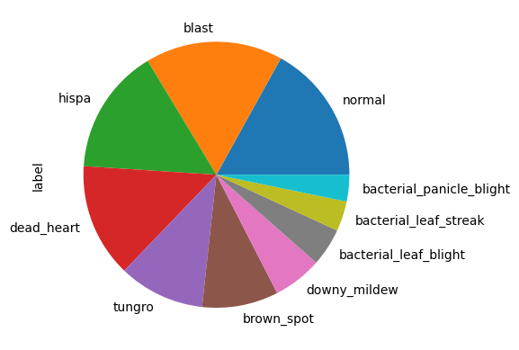
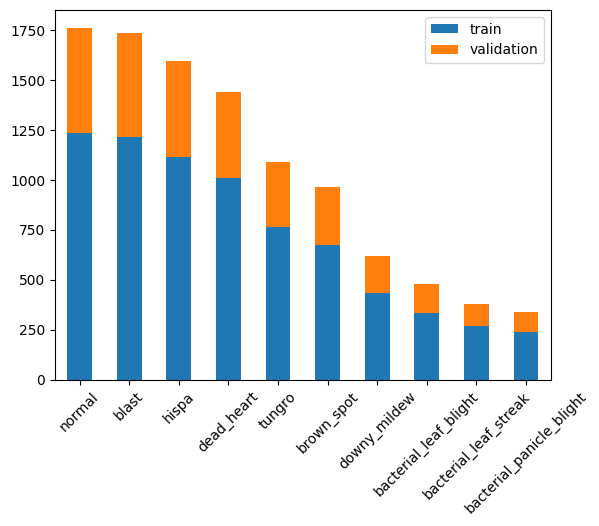
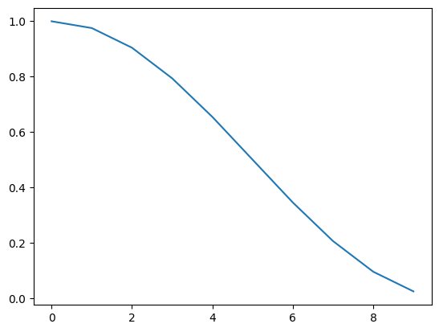

ResNet from scratch for rice disease classification


from pathlib import Path
import numpy as np
import pandas as pd
from PIL import Image
import torch
from torch import nn
from torchvision import transforms
import gc
from functools import partial
from tqdm import tqdm
from matplotlib import pyplot as plt
device = torch.device("cuda" if torch.cuda.is_available() else "cpu")Convolution block
It is a basic building block of the model. It takes the number of input channels/features and produces the output volume with the specified number of channels. The block of 3x3 convolutional filters is followed by a batch norm and an activation function. By default the padding is equal to 1 so that the 3x3 convolutions don’t reduce the size of the input. The same block is used in the resnet and the batch norm papers 
def convolution_block(input_ch, output_ch, kernel_size = 3, padding=1, act=True):
layers = [nn.Conv2d(input_ch, output_ch, stride=1, kernel_size=kernel_size, padding=padding), nn.BatchNorm2d(output_ch)]
if act: layers.append(nn.LeakyReLU(0.1))
return nn.Sequential(*layers)
# Example, channels 3 -> 32
convolution_block(input_ch=3,output_ch=32)(torch.randn((64,3,244,244))).shapetorch.Size([64, 32, 244, 244])Residual module
I use a simple residual module without downsampling, which contains 2 consecutive convolutional blocks and a residual connection. In case the number of input and output channels are different a 1x1 convolutional block is used to match the number of channels in the residual connection 
From the resnet paper:

class ResidualBlock(nn.Module):
def __init__(self, input_ch, output_ch):
super(ResidualBlock, self).__init__()
self.noop = lambda x: x
self.residual_conv = convolution_block(input_ch,output_ch,kernel_size=1, padding=0, act=False)
self.residual_connection = self.noop if input_ch == output_ch else self.residual_conv
self.conv1 = convolution_block(input_ch,output_ch)
self.conv2 = convolution_block(output_ch,output_ch,act=False)
self.convolutions = lambda x: self.conv2(self.conv1(x))
self.relu = nn.LeakyReLU(0.1)
def forward(self, x):
return self.relu(self.convolutions(x) + self.residual_connection(x))
ResidualBlock(3,32)(torch.randn((64,3,244,244))).shape, ResidualBlock(32,32)(torch.randn((64,32,244,244))).shape(torch.Size([64, 32, 244, 244]), torch.Size([64, 32, 244, 244]))MaxPooling
The downsampling of the input can be performed with strided convolutions or by using polling. They have their pros and cons, I choose maxpooling, that way the model needs to learn less parameters. 
nn.MaxPool2d(2)(torch.randn((64,3,144,144))).shape, nn.MaxPool2d(2)(torch.randn((64,3,7,7))).shape(torch.Size([64, 3, 72, 72]), torch.Size([64, 3, 3, 3]))Global average pooling
This layer essentially turns each feature map into a single number by averaging all the values. It allows to use different size inputs.

nn.AdaptiveAvgPool2d((1,1))(torch.randn((64,128,7,7))).shape, nn.AdaptiveAvgPool2d((1,1))(torch.randn((64,256,2,2))).shape(torch.Size([64, 128, 1, 1]), torch.Size([64, 256, 1, 1]))Flatten layer
After the global average pooling the dimension of the tensor would be (Batch x Channels x 1 x 1). To feed it into the fully connected layer we need to flatten it to (Batch x Channels). But in general the flattening operation should be able to stretch the N dimensional tensor into 1D tensor.

class FlattenLayer(nn.Module):
def __init__(self): super(FlattenLayer, self).__init__()
def forward(self, x):
return x.view(x.size(0), -1)
FlattenLayer()(torch.randn((64,128,1,1))).shape, FlattenLayer()(torch.randn((64,3,3,3))).shape(torch.Size([64, 128]), torch.Size([64, 27]))Classification head
The last module is a 2 layer feed forward network with activation function in between. The classification head maps the N dimensional input feature vector to a 10 dimensional output vector, which represents the predicted logits for each class.

Building the model
def get_model():
return nn.Sequential(
convolution_block(3,32),
nn.MaxPool2d(2),
ResidualBlock(32, 32),
nn.MaxPool2d(2),
ResidualBlock(32, 32),
nn.MaxPool2d(2),
ResidualBlock(32, 64),
nn.MaxPool2d(2),
ResidualBlock(64, 64),
nn.MaxPool2d(2),
ResidualBlock(64, 64),
nn.MaxPool2d(2),
ResidualBlock(64, 128),
nn.AdaptiveAvgPool2d((1,1)),
FlattenLayer(),
nn.Linear(128, 128), nn.ReLU(), nn.Linear(128, 10)
)
get_model()(torch.randn(64,3,244,244)).shapetorch.Size([64, 10])Check data dimensions
shapes = []
model = get_model()
input = torch.randn(64,3,244,244)
for layer in model:
layer.register_forward_hook(lambda module,args,output: shapes.append((type(module), list(output.shape))))
model(input);
pd.DataFrame(shapes, columns=['module', 'output'])| module | output | |
|---|---|---|
| 0 | <class 'torch.nn.modules.container.Sequential'> | [64, 32, 244, 244] |
| 1 | <class 'torch.nn.modules.pooling.MaxPool2d'> | [64, 32, 122, 122] |
| 2 | <class '__main__.ResidualBlock'> | [64, 32, 122, 122] |
| 3 | <class 'torch.nn.modules.pooling.MaxPool2d'> | [64, 32, 61, 61] |
| 4 | <class '__main__.ResidualBlock'> | [64, 32, 61, 61] |
| 5 | <class 'torch.nn.modules.pooling.MaxPool2d'> | [64, 32, 30, 30] |
| 6 | <class '__main__.ResidualBlock'> | [64, 64, 30, 30] |
| 7 | <class 'torch.nn.modules.pooling.MaxPool2d'> | [64, 64, 15, 15] |
| 8 | <class '__main__.ResidualBlock'> | [64, 64, 15, 15] |
| 9 | <class 'torch.nn.modules.pooling.MaxPool2d'> | [64, 64, 7, 7] |
| 10 | <class '__main__.ResidualBlock'> | [64, 64, 7, 7] |
| 11 | <class 'torch.nn.modules.pooling.MaxPool2d'> | [64, 64, 3, 3] |
| 12 | <class '__main__.ResidualBlock'> | [64, 128, 3, 3] |
| 13 | <class 'torch.nn.modules.pooling.AdaptiveAvgPo... | [64, 128, 1, 1] |
| 14 | <class '__main__.FlattenLayer'> | [64, 128] |
| 15 | <class 'torch.nn.modules.linear.Linear'> | [64, 128] |
| 16 | <class 'torch.nn.modules.activation.ReLU'> | [64, 128] |
| 17 | <class 'torch.nn.modules.linear.Linear'> | [64, 10] |
Download data
Code
! mkdir ~/.kaggle
! cp kaggle.json ~/.kaggle/ # kaggle personal token json file
! chmod 600 ~/.kaggle/kaggle.json
!kaggle competitions download -c paddy-disease-classification
!unzip /content/paddy-disease-classification.zipPrepare data
Collecting information about images:
Code
data_path = 'train_images'
def get_imgs_into():
train_folders = list((Path(data_path)).iterdir())
images = [(img_path.name, img_folder.name, Image.open(img_path).size) for img_folder in tqdm(train_folders,position=0) for img_path in img_folder.iterdir()]
images = pd.DataFrame(data = images, columns=["id", "label", "size"])
return images
imgs_info = get_imgs_into()
imgs_info100%|██████████| 10/10 [00:01<00:00, 6.64it/s]| id | label | size | |
|---|---|---|---|
| 0 | 108706.jpg | bacterial_panicle_blight | (480, 640) |
| 1 | 104414.jpg | bacterial_panicle_blight | (480, 640) |
| 2 | 106589.jpg | bacterial_panicle_blight | (480, 640) |
| 3 | 108585.jpg | bacterial_panicle_blight | (480, 640) |
| 4 | 102955.jpg | bacterial_panicle_blight | (480, 640) |
| ... | ... | ... | ... |
| 10402 | 105986.jpg | hispa | (480, 640) |
| 10403 | 104959.jpg | hispa | (480, 640) |
| 10404 | 104619.jpg | hispa | (480, 640) |
| 10405 | 104946.jpg | hispa | (480, 640) |
| 10406 | 103724.jpg | hispa | (480, 640) |
10407 rows × 3 columns
Labels distribution
imgs_info.label.value_counts().plot.pie()<Axes: ylabel='label'>
Size of the images
imgs_info["size"].value_counts()(480, 640) 10403
(640, 480) 4
Name: size, dtype: int64Reduce size
To accelerate experiments I reduced the size of the images to 244 x 244. 
Code
def resize_imgs(df, dest, size):
for label_dir in df.label.unique():
Path(f"{dest}/{label_dir}").mkdir(parents=True,exist_ok=True)
for _, row in tqdm(list(df.iterrows())):
label = row["label"]
id = row["id"]
im = Image.open(Path(data_path)/label/id)
im.resize(size).save(f"{dest}/{label}/{id}")
sml_imgs_path = "train_sml"
resize_imgs(imgs_info, sml_imgs_path, (244,244))100%|██████████| 10407/10407 [01:17<00:00, 134.83it/s]Split train/validation
Code
train_data = imgs_info.groupby("label", group_keys=False).apply(lambda x: x.sample(frac=0.7, random_state=123))
valid_data = imgs_info.loc[~imgs_info.index.isin(train_data.index)]
train_data.reset_index(drop=True, inplace=True)
valid_data.reset_index(drop=True, inplace=True)
pd.concat([
train_data.label.value_counts().rename('train'),
valid_data.label.value_counts().rename('validation')],
axis=1)\
.plot.bar(stacked=True,rot=45)<Axes: >
Label encoding
label_to_index = {label:id for id,label in enumerate(imgs_info.label.unique())}
label_to_index{'bacterial_panicle_blight': 0,
'brown_spot': 1,
'downy_mildew': 2,
'normal': 3,
'blast': 4,
'tungro': 5,
'bacterial_leaf_streak': 6,
'bacterial_leaf_blight': 7,
'dead_heart': 8,
'hispa': 9}Create dataset

class Dataset:
def __init__(self,annotations,label_encoding,data_path):
self.annotations = annotations
self.label_encoding = label_encoding
self.data_path = data_path
self.transforms = transforms.Compose([Image.open, transforms.ToTensor()])
self.prefetched_items = {}
def __getitem__(self, index):
item = self.prefetched_items.get(index, None)
if item is None:
annotation = self.annotations.iloc[index]
path = f'{self.data_path}/{annotation.label}/{annotation.id}'
x = self.transforms(path)
y = self.label_encoding[annotation.label]
item = (x,y)
return item
def __len__(self): return len(self.annotations)
def prefetch(self, frac=1):
n = int(len(self.annotations)*frac)
self.prefetched_items = { id:self[id] for id in tqdm(range(n)) }
train_ds = Dataset(train_data,label_to_index,sml_imgs_path)
validation_ds = Dataset(valid_data,label_to_index,sml_imgs_path)Estimate mean and std
Estimating means and standard deviations for each channel in the train dataset.
Code
means = []
stds = []
for id in tqdm(range(len(train_ds))):
item = train_ds[id]
mean = item[0].mean(dim=(1,2)) # C,H,W -> mean(H,W)
std = item[0].std(dim=(1,2))
means.append(mean)
stds.append(std)
means = torch.stack(means).mean(0)
stds = torch.stack(stds).mean(0)
means,stds100%|██████████| 7286/7286 [00:20<00:00, 353.95it/s](tensor([0.4962, 0.5876, 0.2331]), tensor([0.2214, 0.2233, 0.1802]))Training loop
Training loop is responsible for forward pass, backward pass and optimization step

from tqdm import tqdm
import functools
import math
class Listener:
'''
Callback interface for different stages of the training process
'''
def before_fit(self): pass
def after_batch(self): pass
def after_epoch(self): pass
def before_epoch(self): pass
def after_fit(self): pass
def call_all(listeners,method_name):
for l in listeners:
getattr(l,method_name)()
class ListenerList(Listener):
'''
Callback dispatcher, calls all the listeners
'''
def __init__(self, listeners, trainer):
self.listeners = listeners
for l in self.listeners: l.trainer = trainer
def __getattribute__(self, attr):
if hasattr(Listener, attr): # redirect call to all the listeners if the method is from Listener
return functools.partial(call_all, self.listeners, attr)
else:
return object.__getattribute__(self, attr) # do not redirect the call
class Trainer:
def __init__(self, model, train_dl, valid_dl, opt_func,
lr, loss_func, callbacks=[]):
self.model, self.train_dl, self.valid_dl, self.lr = model, train_dl, valid_dl, lr
self.loss_func = loss_func
self.opt_func = opt_func
self.cbs = ListenerList(callbacks,self)
self.model.to(device)
def one_batch(self, xb, yb):
self.yb = yb.to(device)
self.xb = xb.to(device)
self.preds = self.model(self.xb)
self.loss = self.loss_func(self.preds, self.yb)
if self.model.training:
self.loss.backward()
self.opt.step()
self.opt.zero_grad()
self.cbs.after_batch()
def one_epoch(self, train=True):
self.model.training = train
self.cbs.before_epoch()
self.dl = self.train_dl if train else self.valid_dl
for xb,yb in tqdm(self.dl, position=0, leave=True):
self.one_batch(xb,yb)
self.cbs.after_epoch()
def fit(self, epochs):
self.epochs = epochs
self.opt = self.opt_func(self.model.parameters(), self.lr)
self.cbs.before_fit()
for e in range(epochs):
self.epoch = e
self.one_epoch()
with torch.no_grad(): self.one_epoch(train=False)
self.cbs.after_fit()Data normalization callback

This callback will perform data normalization so that each channel across all the images has zero mean and unit variance
class DataNorm(Listener):
def __init__(self, mean, std, trainer=None):
if trainer is not None: self.trainer = trainer
self.mean = mean[None,:,None,None] # add dimensions to match B,C,H,W shape
self.std = std[None,:,None,None]
def _norm(self,x, data_mean, data_std):
return (x - data_mean)/data_std
def before_batch(self):
self.trainer.batch.x = self._norm(self.trainer.batch.x, self.mean, self.std)Metrics
Compute loss and accuracy metrics for each epoch.
from collections import defaultdict
from statistics import mean
class EpochMetrics(Listener):
'''
Compute loss and accuracy metrics for each epoch
'''
def __init__(self, trainer=None):
if trainer is not None: self.trainer = trainer
def before_epoch(self):
self.mode = 'train' if self.trainer.model.training else 'test'
if self.mode == 'train':
self.metrics = defaultdict(list)
self.metrics['lr'].append(self.trainer.opt.param_groups[0]['lr'])
@torch.no_grad()
def after_batch(self):
accuracy = (self.trainer.preds.argmax(dim=1)==self.trainer.yb).float().mean().detach().item()
loss = self.trainer.loss.detach().item()
self.metrics[f'{self.mode}_acc'].append(accuracy)
self.metrics[f'{self.mode}_loss'].append(loss)
def after_epoch(self):
if self.mode == 'test':
aggregated = {k:mean(v) for k,v in self.metrics.items()}
display(pd.DataFrame(aggregated, index=[self.trainer.epoch]))Learning rate scheduler
Reducing the learning rate during deep learning training is essential to strike a balance between fast convergence and stable optimization.
Initially using a higher learning rate facilitates rapid progress towards relevant areas of the loss surface, avoiding shallow local minima. However, as training proceeds, a reduced learning rate prevents overshooting and oscillations, enabling the optimization process to settle into a more refined solution.
class LrScheduler(Listener):
def __init__(self, sched, trainer=None):
self.sched_func = sched
if trainer is not None: self.trainer = trainer
def before_fit(self):
self.sched = self.sched_func(self.trainer.opt)
def after_epoch(self):
if self.trainer.model.training: self.sched.step()
class CosineLRCalculator:
def __init__(self, steps, min_lr = 1e-12):
self.steps = steps
self.min_lr = min_lr
def __call__(self, epoch):
if epoch == 0: return 1
return (math.cos(math.pi*(epoch/self.steps)) + 1)*0.5 + self.min_lr
steps = 10
lr1 = CosineLRCalculator(steps)
lrs = [lr1(i) for i in range(steps)]
plt.plot(np.arange(len(lrs)), lrs)
Training
Create data loaders and prefetch images into RAM
data_path = "train_sml"
train_dl = torch.utils.data.DataLoader(train_ds, 64, shuffle = True, num_workers = 2)
valid_dl = torch.utils.data.DataLoader(validation_ds, 64, shuffle = True, num_workers = 2)
train_ds.prefetch() # preprocess and upload images to RAM
validation_ds.prefetch()100%|██████████| 7286/7286 [00:16<00:00, 449.94it/s]
100%|██████████| 3121/3121 [00:04<00:00, 625.03it/s]Run the training
eps = 11
model = get_model()
n_param = sum(p.numel() for p in model.parameters() if p.requires_grad)
print(f"numer of parameters {n_param}")
em = EpochMetrics()
opt = partial(torch.optim.AdamW, eps=1e-5, weight_decay=2)
sch = partial(torch.optim.lr_scheduler.LambdaLR, lr_lambda = CosineLRCalculator(eps))
tr = Trainer(model, train_dl, valid_dl, opt, 0.001, torch.nn.CrossEntropyLoss(),
callbacks = [em, LrScheduler(sch), DataNorm(means, stds)])
tr.fit(eps)numer of parameters 503498
100%|██████████| 114/114 [00:31<00:00, 3.66it/s]
100%|██████████| 49/49 [00:04<00:00, 10.46it/s]
100%|██████████| 114/114 [00:23<00:00, 4.93it/s]
100%|██████████| 49/49 [00:05<00:00, 9.70it/s]
100%|██████████| 114/114 [00:22<00:00, 5.09it/s]
100%|██████████| 49/49 [00:06<00:00, 7.51it/s]
100%|██████████| 114/114 [00:22<00:00, 5.05it/s]
100%|██████████| 49/49 [00:04<00:00, 10.37it/s]
100%|██████████| 114/114 [00:22<00:00, 4.96it/s]
100%|██████████| 49/49 [00:05<00:00, 9.27it/s]
100%|██████████| 114/114 [00:22<00:00, 4.98it/s]
100%|██████████| 49/49 [00:04<00:00, 10.21it/s]
100%|██████████| 114/114 [00:22<00:00, 5.00it/s]
100%|██████████| 49/49 [00:05<00:00, 9.29it/s]
100%|██████████| 114/114 [00:22<00:00, 5.02it/s]
100%|██████████| 49/49 [00:05<00:00, 9.57it/s]
100%|██████████| 114/114 [00:22<00:00, 5.00it/s]
100%|██████████| 49/49 [00:04<00:00, 10.40it/s]
100%|██████████| 114/114 [00:22<00:00, 4.97it/s]
100%|██████████| 49/49 [00:04<00:00, 10.32it/s]
100%|██████████| 114/114 [00:22<00:00, 4.99it/s]
100%|██████████| 49/49 [00:04<00:00, 9.97it/s]| lr | train_acc | train_loss | test_acc | test_loss | |
|---|---|---|---|---|---|
| 0 | 0.001 | 0.453688 | 1.570339 | 0.551007 | 1.301036 |
| lr | train_acc | train_loss | test_acc | test_loss | |
|---|---|---|---|---|---|
| 1 | 0.00098 | 0.622391 | 1.119272 | 0.694743 | 0.971592 |
| lr | train_acc | train_loss | test_acc | test_loss | |
|---|---|---|---|---|---|
| 2 | 0.000921 | 0.72309 | 0.835933 | 0.73036 | 0.813852 |
| lr | train_acc | train_loss | test_acc | test_loss | |
|---|---|---|---|---|---|
| 3 | 0.000827 | 0.794215 | 0.666703 | 0.781966 | 0.69761 |
| lr | train_acc | train_loss | test_acc | test_loss | |
|---|---|---|---|---|---|
| 4 | 0.000708 | 0.842039 | 0.519453 | 0.812995 | 0.600903 |
| lr | train_acc | train_loss | test_acc | test_loss | |
|---|---|---|---|---|---|
| 5 | 0.000571 | 0.897874 | 0.357284 | 0.808947 | 0.582642 |
| lr | train_acc | train_loss | test_acc | test_loss | |
|---|---|---|---|---|---|
| 6 | 0.000429 | 0.938033 | 0.250187 | 0.855529 | 0.467137 |
| lr | train_acc | train_loss | test_acc | test_loss | |
|---|---|---|---|---|---|
| 7 | 0.000292 | 0.974644 | 0.138324 | 0.907454 | 0.320987 |
| lr | train_acc | train_loss | test_acc | test_loss | |
|---|---|---|---|---|---|
| 8 | 0.000173 | 0.990817 | 0.075418 | 0.916161 | 0.286448 |
| lr | train_acc | train_loss | test_acc | test_loss | |
|---|---|---|---|---|---|
| 9 | 0.000079 | 0.998355 | 0.04877 | 0.928402 | 0.271697 |
| lr | train_acc | train_loss | test_acc | test_loss | |
|---|---|---|---|---|---|
| 10 | 0.00002 | 0.999452 | 0.039643 | 0.925949 | 0.262439 |